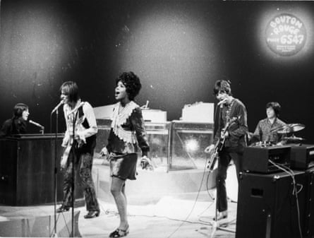
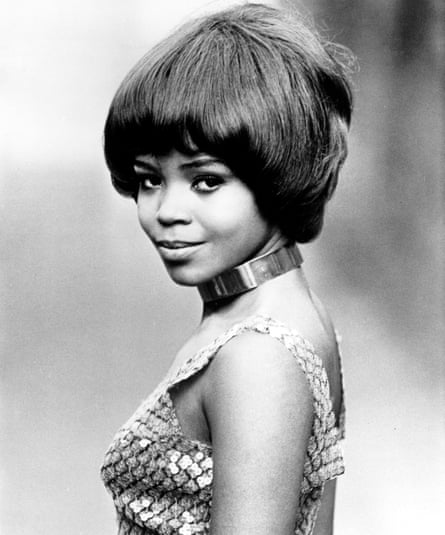

You’ve played with a lot of incredible artists – Tina Turner, the Small Faces, Nick Drake, Dr John, George Harrison, Peter Gabriel, Roger Waters, the KLF, Ocean Colour Scene and so many more. If you could collaborate with absolutely anyone, who would it be? Harrison1986 I love to collaborate – basically, I like collaborating with people who want to collaborate with me. I’ve just worked with Paul Weller and Cast, but a lot of people I’d love to have worked with are no longer with us. Top of my list on a production level would be Quincy Jones . Vocally, how about something with Prince?! And I love Mavis Staples , who’s still with us; I’ve met her. It would be great to do something with Mavis.
Keen collaborator … with(from left)Ian McLagan, Steve Marriott, Ronnie Lane and Kenney Jones of the Small Faces in 1968.Photograph: Gilles Petard/Redferns
Of all the artist s you’ve collaborated with, who stands head and shoulders above the rest? Aubrey26 Tina Turner. Simply the best – and what a joy to have her start a career I never planned on. I was in a very abusive teenage marriage. I said a prayer to ask God to take me out of that situation and a couple of hours later I was in Tina’s living room, singing Dancing in the Street. I’d gone there to help some other ladies – Gloria Scott and Maxine Smith – get the gig, but another girl didn’t show up for the audition. Maxine remembered I used to sing in church and the rest is history. My whole career is all about the unexpected. It think it has a lot to do with manifesting dreams, although being called a “legend” doesn’t pay the bills.
Are you going to Glastonbury with a band? GingerTom Yes, I’m on the Acoustic stage with my fabulous band. I’ve had to edit my set down to 40 minutes, but it’s gonna be a great show. When I played in 2022, Diana Ross was on at the same time, but I still had a lot of people come and see me, or tell me they wish they had. This year, Rod Stewart is playing at the same time I’m on, but he’s complaining cos he’s only getting an hour and a half!
As a young singer, you were one of the Ikettes. We all know about Tina Turner’s harrowing experience with Ike Turner. I hope it wasn’t too bad for you. MovingGelatinePlates The most pleasant part was being on stage every night with that amazing band. We were on the road for two years and probably working 85 out of every 90 days. On the road in a bus, you see everything – a lot of bad behaviour – and I was very young and very shy, so I had to learn how to protect myself, by staying in my place. I wasn’t one of Ike’s women, so he couldn’t control me.

‘Being called a “legend” doesn’t pay the bills’ … playing Cornbury festival in Oxford in 2018.Photograph: Harry Herd/Redferns
Your autobiography, Soul Survivor, is intensely sad. How have you managed to let go of some of the bitterness about the way you were treated, particularly as a late teenager ? saultbreakcherry I don’t hold grudges. The most horrible thing that’s happened to me in my life was losing my daughter. [Debra Arnold was killed in a car crash in 1977.] I had to let her go, but she’s with me every day. Unfortunately, in this industry, I also have to deal with a lot of politics, but I have to let it go and stay in the moment. I have to stay rooted in myself and that’s how I survive.
Your performance with the Small Faces on Tin Soldier is unforgettable. What were they like to work with? revelstoke Oh, just a joy. [Singer] Steve Marriott was like my soul brother. We were very young and enthusiastic: same age, same height. We hit it off immediately musically and dated for a short time. I’ve just recorded Afterglow, which the Small Faces wrote for me, but liked so much they took it back! If Steve were here now, he’d be the modfather. I miss him dearly and he visits me from time to time in dreams. I had a visitation from him not long ago.
Unforgettable … PP Arnold and the Small Faces perform Tin Soldier.
What were the sessions for Peter Gabriel’s Sledgehammer like? steve_bayley I’d had a tough time in America, so coming back to the UK and doing [the musical] Starlight Express and working with Peter was brilliant. I also sing on Don’t Give Up, which I’ve only just found out. We did a version before Peter did it with Kate Bush and I’m on her version singing: “Don’t give up …” towards the end. The sessions with Peter were great fun, especially once I discovered he was also into gravity boots. They’re a fitness thing I found out about when I lived in Miami. I used to hang upside down in my garden, doing sit-ups. Peter had them in the fitness room at his house, so we were both into hanging upside down, doing sit-ups.
What are your memories of working with Keith Emerson ? What’s the story about how you gave the Nice their name? William Working with Keith was an absolute pleasure. He was such a lovely guy and so very talented. I knew from the beginning that he had his own ambitions, but I was very happy that he was able to help me launch that period of my career. The band that became the Nice were my backing band [in 1967]. Steve Marriott had introduced me to a Lord Buckley album that had a song on it called The Nazz. With my accent, it sounded like The Nice, and “nice one” was a really hip expression in the 60s. So it was my idea to call my band the Nice. I saw Keith not long before he passed away and we talked about perhaps doing something else together. I went to the funeral. He loved what he did and when he wasn’t physically able to do it any more it would have been very hard for him.
‘I was very young and very shy’ … PP Arnold in the 60s.Photograph: Michael Ochs Archives/Getty Images
I understand some of the money the KLF [as the K Foundation] burned on Jura was rightly yours. Can you tell us about that? pconl Me and Katie Kissoon were the Mu Mu Choir. I sang the hook on 3am Eternal. I was paid a session fee, but the deal was that if they used my solo performance I’d get 5%, which I never got because they claimed it wasn’t the song’s hook. I’ve got to let it go now, but it’s on their conscience. [The KLF did not respond to a request for comment.]
Do you have anecdotes about Andrew Loog Oldham and Immediate Records ? Zaropans If it wasn’t for Andrew, there wouldn’t be a PP Arnold. He was the best manager and he had a vision for me; the only time in my career I’ve had creative management. Andrew was really into the west-coast girl group thing, so [Rolling Stones keyboardist] Ian Stewart suggested he check me out, and because Mick [Jagger] and I were tight he also drove the conversation. I became part of Immediate’s “industry of human happiness”. We were all very young and Andrew got caught up in the drug thing that went down with a lot of guys in those days and that was the downfall of Immediate. I wish I had someone like that in my life now, but I’m still in contact with Andrew.
With you on Immediate and the equally amazing Doris Troy on Apple , the biggest stars of the day were lining up to play backing musician for you both. Any tales you’d care to share? Mr_202 Madeline Bell, Doris and I all had the authentic gospel sound that everybody wanted on their records at the time. Doris and I did that Nick Drake song [Poor Boy, on Bryter Layter] together. Other than Keith Emerson … Steve Howe from Yes was in my band when I supported Eric Clapton on the Delaney & Bonnie tour. There’s a thing online somewhere about all the people in my bands who went on to be huge stars. I forget them all, but it was always easier for the boys. There are more women now, but the industry is difficult if you’re not a boyband or you’re not taking off your clothes to sing. I don’t get that. When we came to England, Tina started wearing short dresses and miniskirts, but she was always classy.
In Liverpool last year, you covered Shoot the Dove by Paul Weller , a brilliant but little known song of his. How do you decide which songs you cover in live shows? bluelambretta I have to identify with the lyric, the story. Shoot the Dove is about arguments and fights in relationships: “You kill the love when you shoot the dove.” I can relate to that. I’ve just done God Only Knows as a tribute to Brian Wilson , but I felt it wasn’t right to do it without also doing a tribute to Sly [Stone] , so at rehearsal yesterday I decided to do Que Sera, Sera as part of a medley for Glastonbury. “Whatever will be will be.” I can relate to that as well.
A question from my daughter, Astrid: PP, I am six years old. I listen to your songs on my CD player. My favourite is Everything’s Gonna Be Alright. My question is: why are you such a good singer? jonathan_liew Astrid, I think it’s because I just love to sing. I sang my first solo – a song called We Are Soldiers in the Army – when I was four years old. When I finished, everyone in the church started shouting because they were happy. So that’s why I sing: I like to touch that happy spot in everybody. I don’t know if you watch CBeebies, but I’m the voice of Cleo Nibbles, the soul mouse in the new Yukee series. A little mouse with a big voice.